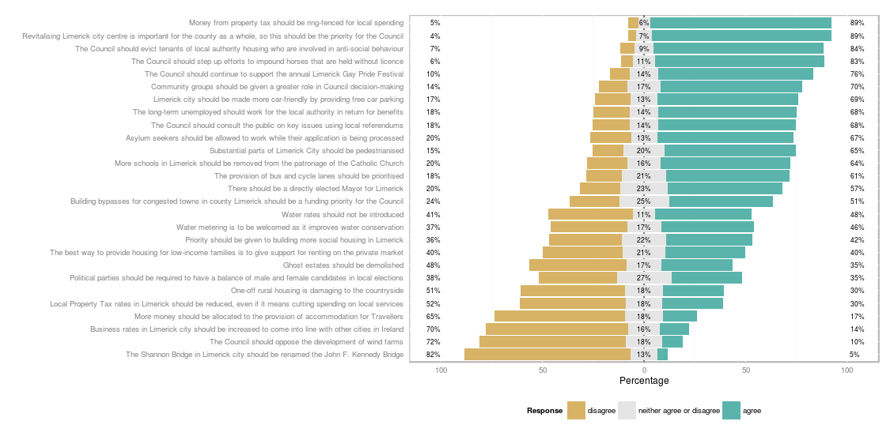
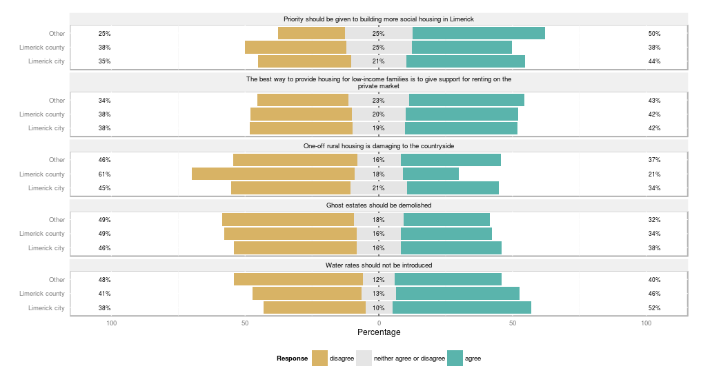

<!doctype html>
<html lang="en">

	<head>
		<meta charset="utf-8">

		<title>Dublin R - voting advise data viewed with the likert package</title>

		<meta name="description" content="Use of Likert package to analyse voter advise data">
		<meta name="author" content="John Costello">

		<meta name="apple-mobile-web-app-capable" content="yes" />
		<meta name="apple-mobile-web-app-status-bar-style" content="black-translucent" />

		<meta name="viewport" content="width=device-width, initial-scale=1.0, maximum-scale=1.0, user-scalable=no">

		<link rel="stylesheet" href="css/reveal.min.css">
		<link rel="stylesheet" href="css/theme/default.css" id="theme">
		<link rel="stylesheet" href="css/custom.css">

		<!-- For syntax highlighting -->
		<link rel="stylesheet" href="lib/css/zenburn.css">

		<!-- If the query includes 'print-pdf', include the PDF print sheet -->
		<script>
			if( window.location.search.match( /print-pdf/gi ) ) {
				var link = document.createElement( 'link' );
				link.rel = 'stylesheet';
				link.type = 'text/css';
				link.href = 'css/print/pdf.css';
				document.getElementsByTagName( 'head' )[0].appendChild( link );
			}
		</script>

		<!--[if lt IE 9]>
		<script src="lib/js/html5shiv.js"></script>
		<![endif]-->
	</head>

	<body>

		<div class="reveal">
			<div class="slides">
				<!-- Slides are separated by newline + three dashes + newline, vertical slides identical but two dashes -->
				<section data-markdown data-separator="^\n---\n$" data-vertical="^\n--\n$">
          <script type="text/template">
						# Dublin R
						### Voter advise data viewed with the Likert package

						<small> Slides are @ [http://xifip.github.io/whichstats/#/](http://xifip.github.io/whichstats/#/)</small>

						<small> Code and pdf of slides @ [https://github.com/Xifip/whichstats](https://github.com/Xifip/whichstats)</small>

						<small>Contact: &nbsp; [costelljohn@gmail.com](mailto:costelljohn@gmail.com?Subject=data%20analysis)</small>

						<small>July &nbsp; 2014</small>

						---

						

						---

						# Topics

						* [Likert](#/3)
						* [Whichcandidate and the data](#/4)
						* [Likert package](#/5)
						* [Kohanan package](#/6)

						---

					  ##[Likert Items](#/3)

					  <a href="images/example_likert.png" class="image">
						  
					  </a>

						--

						## [Likert - Levels of measurement](#/2)

						<a href="images/measlev2.gif" class="image">
						  
					  </a>

						--

						## [Likert - Common Biases](#/2)

						#### Central tendency bias

						* Respondents may avoid using extreme response categories
						* Forced choice method can be used to counter act

						<a href="images/measlev2.gif" class="image">
						  
					  </a>

						#### Acquiescence bias

						* The respondents to a survey have a tendency to agree with all the questions, can be sometimes seen in employee surveys
						* Balanced keying can be used, where a mix of positive and negative statements are used

						--

						##[Likert - Terms](#/3)

						<a href="images/likert_terms.png" class="image">
							
						</a>

						--

						##[Likert - Items](#/3)

						1. We must think about individual Likert items and Likert scales (made up of multiple items)
						in different ways.
						2. Likert items represent an item format not a scale.
						3. Whether Likert items are interval or ordinal is irrelevant in using Likert scale data, which
						can be taken to be interval.
						4. If a researcher presents the means and standard deviations (interval scale statistics) for
						individual Likert items, he/she should also present the percent or frequency of people who
						selected each option (a nominal scale statistic) and let the reader decide how to interpret the
						results at the Likert-item level.
						5. In any case, we should not rely too heavily on interpreting single items because single items
						are relatively unreliable.

						<small>source &nbsp; <a href='jalt.org/test/PDF/Brown34.pdf'>SHIKEN: JALT Testing & Evaluation SIG Newsletter. March 2011. 15(1) 10-14.</a></small>

						--

						##[Likert - Scales](#/3)

						1. Likert scales are totals or averages of answers to multiple Likert items.
						2. Likert scales contain multiple items and are therefore likely to be more reliable than single
							items.
						3. Naturally, the reliability of Likert scales should be checked using Cronbach alpha or another
							appropriate reliability estimate.
						4. Likert scales contain multiple items and can be taken to be interval scales so descriptive
							statistics can be applied, as well as correlational analyses, factor analyses, analysis of
							variance procedures, etc. (if all other design conditions and assumptions are met).

						<small>source &nbsp; <a href='jalt.org/test/PDF/Brown34.pdf'>SHIKEN: JALT Testing & Evaluation SIG Newsletter. March 2011. 15(1) 10-14.</a></small>

						---

						## [Whichcandidate.ie](#/2)

						Voter advise application trialled in the local elections 2014 in the six Limerick constituencies. The aim is to cover the next general election in all 							constituencies.

						<br/>

						<small>[UL app seeks to help Limerick voters find their perfect match - Limerick Leader Editorial](http://www.limerickleader.ie/news/local-news/ul-app-seeks-to-help-limerick-voters-find-their-perfect-match-1-5981764)</small>

						<small>[Voting in Limerick, but not sure for who? This will help - Journal.ie](http://www.thejournal.ie/whichcandidate-limerick-voting-ul-1466331-May2014/)</small>

						<br/>

						[Demo](http://www.whichcandidate.ie/)

						--

						## [Whichcandidate.ie - the data](#/4)

						* <div class='highlight'>vpostions: voter positions on 27 statements</div>
						* cpositions: candidate positions on 27 statements
						* <div class='highlight'>questions: 9 optional profile questions presented to the voters</div>
						* <div class='highlight'>responses: voter responses to the optional profile questions</div>
						* <div class='highlight'>voters: constituency for the voter</div>
						* candidates: profile information for the candidates

						--

						## [Whichcandidate.ie - the data](#/4)

						### voter positions

						```
						> head(vpositions_cast[,1:10])
							vp_voter_id vp_1 vp_2 vp_3 vp_4 vp_5 vp_6 vp_7 vp_8 vp_9
						1           1    3    1    3    3    1    1    3    2    3
						2           2    3    2    1    1    1    1    3    1    3
						3           4    3    2    1    1    1    1    3    1    3
						4           5    3    2    1    1    1    1    3    1    3
						5           7    3    1    1    0    0    0    0    0    3
						6           9    2    1    1    3    1    3    3    1    0
						```

						--

						## [Whichcandidate.ie - the data](#/4)

						### optional questions

						```
						> questions[,1:2]
							question_id question_text
							1 Gender
							2 Age group
							3 Where do you live?
							4 Highest level of education completed to date
							5 Which party do you feel closest to?
							6 Which party do you intend to give your first preference to in the
								local elections on May 23rd?
							7 What is the main reason for voting for your party of choice?
							8 Which party did you give your first preference vote to in the last
								general election (2011)?
							9 In politics people sometimes talk of left and right. Where would you
								place yourself on a scale from 0 to 10 where 0 means the left and 10
								means the right?
						```

						--

						## [Whichcandidate.ie - the data](#/4)

						### responses to options questions

						```
						> head(responses_cast)
							res_response_id res_voter_id res_1 res_2 res_3 res_4 res_5 res_6 res_7 res_8 res_9
						1               8          792     1     4     1     5     0     1     1     3     8
						2              10          793     1     2     2     5    10     3     0    12     6
						3              11          795     0     4     0     4     0     1     1     3     4
						4              13          797     1     3     1     5     0     1     1     0     8
						5              14          799     1     3     1     2     3     7     0     3     5
						6              15          802     0     2     0     5    10     7    NA     1     1
						```

						--

						## [Whichcandidate.ie - the data](#/4)

						```
						scorecheck <- by(vpositions[,5], vpositions$voter_id, sum)
						qplot(as.numeric(scorecheck),
							main="Histogram of voter total scores over 27 questions",
							xlab="score")
						qplot(as.numeric(scorecheck[!(scorecheck %in% c(0:20, 81))]),
							binwidth = 81/30,
							main="Histogram of voter total scores over 27 questions - removed lower scores",
							xlab="score")
						```
						<table>
							<tbody>
								<tr>
									<td style="vertical-align:top">
										<a href="images/Hist_scores_01.png" class="image">
											
										</a>
										<p>Histogram of sum of scores for each voter</p>
									</td>
									<td style="vertical-align:top">
										<a href="images/Hist_scores_02.png" class="image">
											
										</a>
										<p> ... low totals removed</p>
									</td>
								</tr>
							</tbody>
						</table>

						---

						## [Likert package](#/2)

						An R package analyzing and visualizing Likert items

						[http://jason.bryer.org/likert/](http://jason.bryer.org/likert/)

						[https://github.com/jbryer/likert](https://github.com/jbryer/likert)


						check out the [demo](https://github.com/jbryer/likert/tree/master/demo) on github

						--

						## [Likert package - basics](#/2)

						* input is a data frame containing the base likert items
						* returns a likert class with the following elements: results, items, grouping, nlevels, and summary
						* remove cols not representing response scores
						* convert the data to fators

						--

						### [Prepare data for Likert](#/5)

						<pre class="codeFullPage"><code data-trim contenteditable class="codeFullPage r">
						# this option is required for this example. It is also in the demo. Using the likert function with the
						# default for digits returns an error for this example.
						options(digits=2)

						vp_likert <- vpositions_cast

						# merge in the voter constituency data
						voters_1 <- voters[,names(voters) %in% c("voter_id", "constituency_id")]
						merge_df_constit <- merge(vpositions_cast, voters_1, by.x = "vp_voter_id", by.y = "voter_id")
						vp_likert <- merge_df_constit

						# remove cols not representing response scores
						likert.df <- merge_df_constit[,!(names(merge_df_constit) %in% c("vp_voter_id", "constituency_id"))]

						# change no opinions to NA
						df <- likert.df
						m <- as.matrix(df)
						m[m==0] <- NA
						likert.df <- as.data.frame(m)

						# give the colnames the question test
						colnames(likert.df) <- issues$issue_question_text

						# convert the data to fators
						for (i in 1:27){
							#likert[,i] <- factor(likert[,i], labels=c("no opinion", "disagree", "neither agree or disagree", "agree"))
							likert.df[,i] <- factor(likert.df[,i], labels=c("disagree", "neither agree or disagree", "agree"))
						}

						</code></pre>

						--

						### [Likert plot](#/5)

						<table>
							<tbody>
								<tr>
									<td style="vertical-align:top">
										<a href="images/l.png" class="image">
											
										</a>
										<a href="images/l_q5.png" class="image">
											
										</a>
									</td>
									<td style="vertical-align:top">
										<pre  style="width:600px; height:400px" ><code data-trim contenteditable class="r" style="width:600px; height:400px">
												# a large number of questions and factor
												# levels results in an unreadable plot
												l<- likert(likert.df)
												plot(l, wrap=100)

												# subset gives a better view
												l_q5<- likert(likert.df[,1:5])
												plot(l_q5, wrap=40)
										</code></pre>
									</td>
								</tr>
							</tbody>
						</table>

						--

						### [Likert heat plot](#/5)

						<table>
							<tbody>
								<tr>
									<td style="vertical-align:top">
										<a href="images/heat.png" class="image">
											
										</a>
									</td>
									<td style="vertical-align:top">
										<pre  style="width:600px; height:400px" ><code data-trim contenteditable class="r" style="width:600px; height:400px">
												plot(l, type="heat", wrap=150)
										</code></pre>
									</td>
								</tr>
							</tbody>
						</table>

						--

						### [Likert plot - grouping](#/5)

						<table>
							<tbody>
								<tr>
									<td style="vertical-align:top">
										<pre  style="width:1200px; height:300px" ><code data-trim contenteditable class="r" style="width:1200px; height:300px">
												# need for the grouping variable to be a factor
												constit_factor <- factor(vp_likert$constituency_id, labels = c("All Local Electoral Areas","Adare-Rathkeale","Cappamore-Kilmallock","Newcastle West","Limerick City East","Limerick City North","Limerick City West"))

												# split the dataset to get something more useful
												l1<- likert(likert.df[,1:5], grouping = constit_factor)
												plot(l1, wrap=40)
										</code></pre>
									</td>
								</tr>
								<tr>
									<td style="vertical-align:top">
										<a href="images/l1.png" class="image">
											
										</a>
									</td>
								</tr>
							</tbody>
						</table>

						--

						### [Likert plot examples](#/5)

						<a href="images/example_01.png" class="image" >
							
						</a>

						--

						### [Likert plot examples](#/5)

						<a href="images/example_02.png" class="image" >
							
						</a>

						--

						### [Likert plot examples](#/5)

						<a href="images/example_03.png" class="image" >
							
						</a>

						--

						### [Likert package summary](#/5)

						* Simple to use and quick to create useful plots
						* Good for visualising Likert items, could group by likert scales
						* Take care where statistics are used, i.e. on the heat plot, for Likert items
						* No analysis just displaying the data, use other tools for modelling/ analysing the data
						* Look through the demo on github to see all the options

          </script>
				</section>
			</div>
		</div>

		<script src="lib/js/head.min.js"></script>
		<script src="js/reveal.min.js"></script>

		<script>

			// Full list of configuration options available here:
			// https://github.com/hakimel/reveal.js#configuration
			Reveal.initialize({
				controls: true,
				progress: true,
				history: true,
				center: true,

				theme: Reveal.getQueryHash().theme, // available themes are in /css/theme
				transition: Reveal.getQueryHash().transition || 'default', // default/cube/page/concave/zoom/linear/fade/none

				// Parallax scrolling
				// parallaxBackgroundImage: 'https://s3.amazonaws.com/hakim-static/reveal-js/reveal-parallax-1.jpg',
				// parallaxBackgroundSize: '2100px 900px',

				// Optional libraries used to extend on reveal.js
				dependencies: [
					{ src: 'lib/js/classList.js', condition: function() { return !document.body.classList; } },
					{ src: 'plugin/markdown/marked.js', condition: function() { return !!document.querySelector( '[data-markdown]' ); } },
					{ src: 'plugin/markdown/markdown.js', condition: function() { return !!document.querySelector( '[data-markdown]' ); } },
					{ src: 'plugin/highlight/highlight.js', async: true, callback: function() { hljs.initHighlightingOnLoad(); } },
					{ src: 'plugin/zoom-js/zoom.js', async: true, condition: function() { return !!document.body.classList; } },
					{ src: 'plugin/notes/notes.js', async: true, condition: function() { return !!document.body.classList; } }
				]
			});

		</script>

	</body>
</html>
